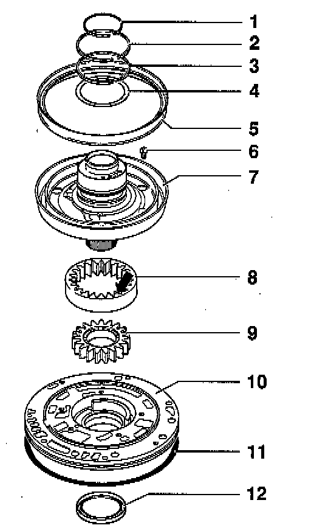

Operation CHARM
: Car repair manuals for everyone.
Home
>>
Volkswagen
>>
1997
>>
GTI (1H1) V6-2.8L (AAA)
>>
Repair and Diagnosis
>>
Transmission and Drivetrain
>>
Automatic Transmission/Transaxle
>>
Fluid Pump
>>
Diagrams
Fluid Pump: Diagrams

LEGEND
1
Piston ring
2
Piston ring
3
Piston ring
4
Thrust washer
5
Piston
6
Bolt
7
Stator support
8
Outer gear
9
Inner gear
10
Housing for ATF pump
11
O-ring
12
Torque converter oil seal